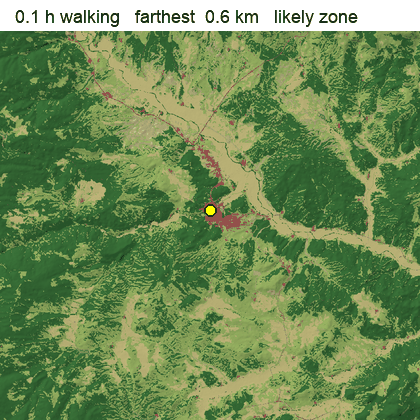
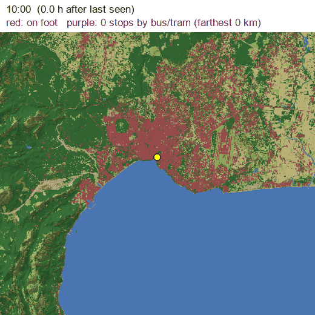
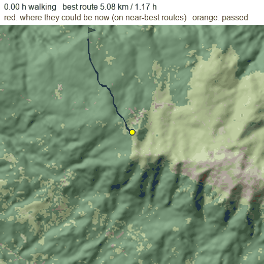
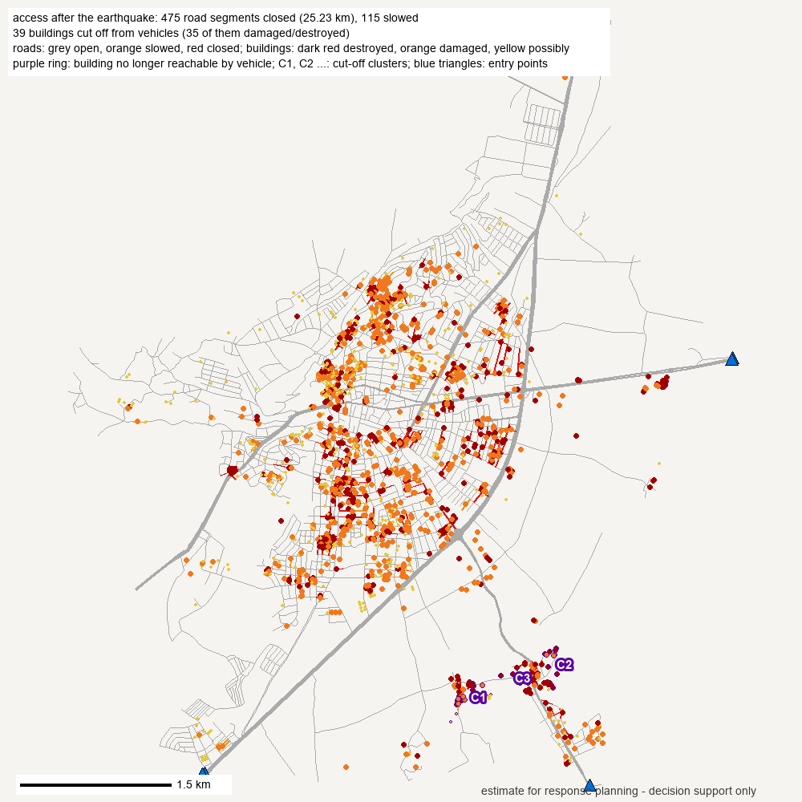
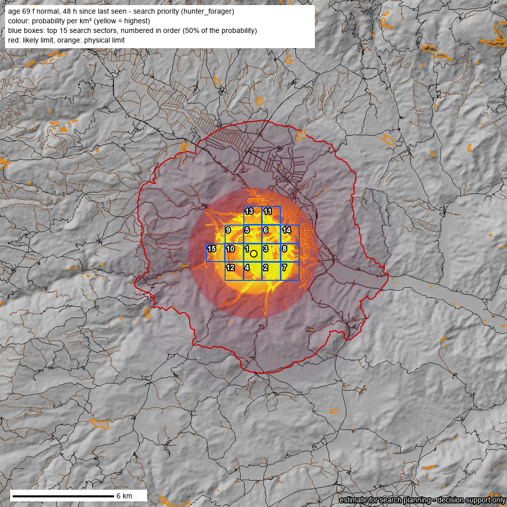
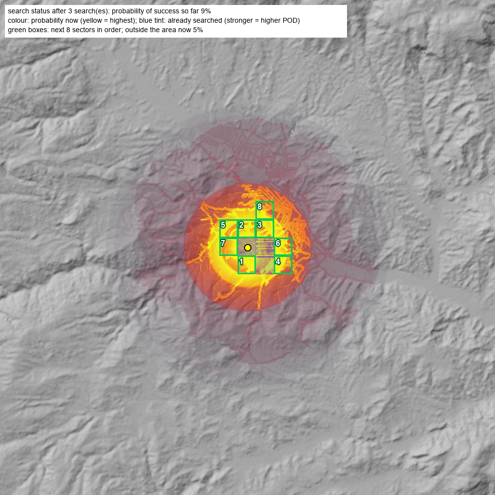
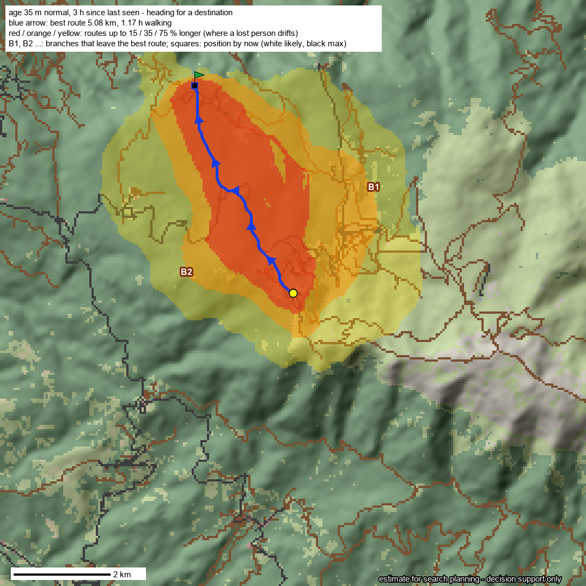
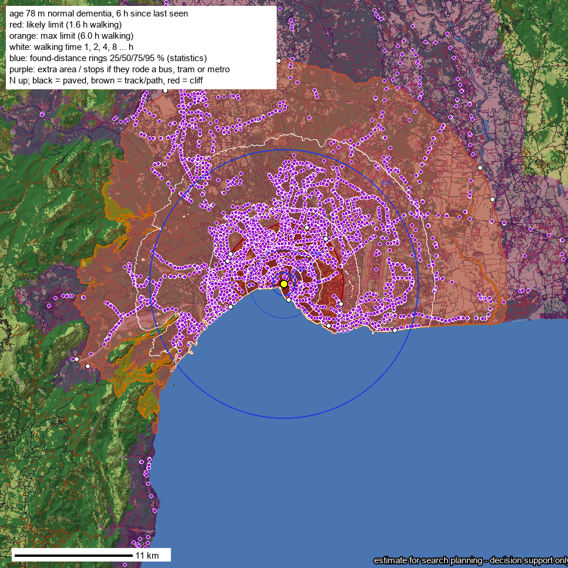
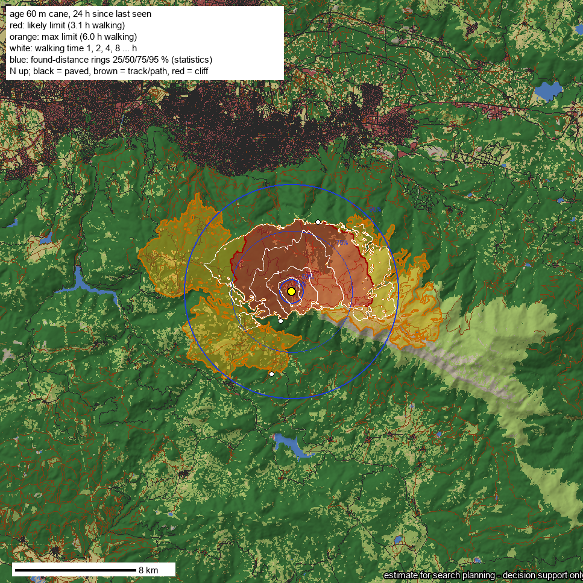

How far could a missing person have gone, and where should the search start? Reach maps over the real terrain, search priority and team sectors. In cities it uses real bus and metro timetables, and after an earthquake it shows which roads are blocked.
Decision support for search and rescue teams. Estimates, not certainties: local knowledge and field information come first.
Generated by the tool from open data, with no API keys.

A 69-year-old woman missing near Boyabat (Sinop): the area she could reach on foot, hour by hour. Red is the likely zone, about 3 in 4 similar solved cases fall inside it.

A 78-year-old man with dementia, central Antalya. Red: on foot. Purple: stops he could have reached by bus or tram, appearing at their real timetable times.

A hiker walking from the Uludağ hotels to the Sarıalan cable car never arrived. The front of possible positions follows the best route and spreads where the terrain lets people drift.

The map shows roads closed by debris (from Copernicus EMS damage maps) and buildings vehicles can no longer reach, with a route and turn-by-turn directions to each cut-off cluster. Interactive version.

The probability per km² combines distance statistics, walking time, paths, stream beds and buildings. The ranked sectors come with GPX files for the teams.

As teams report back, the map updates by Bayes' rule. Searched areas fade, the next sectors move up, and the probability of success so far is shown.

The map shows the best route, routes up to 15, 35 and 75 % longer, and the branches where a tired walker drifts off towards the valleys.

Timetables for about 6,700 GTFS feeds are found automatically. In Türkiye that includes Antalya, Adana, Gaziantep, İzmir, Kocaeli and more.

The farthest point and the walking route in any direction. A cane makes steep slopes impassable.
git clone https://github.com/mstkyvz/sar-sleuth && cd sar-sleuth uv run skills/sar-sleuth/scripts/reach.py --at 41.4690,34.7672 \ --since 2026-10-10T08:00+03:00 --hours 48 --age 69 --sex f --category forager --out out/boyabat uv run skills/sar-sleuth/scripts/access.py --ems EMSR648 --aoi 18 --out out/kirikhan